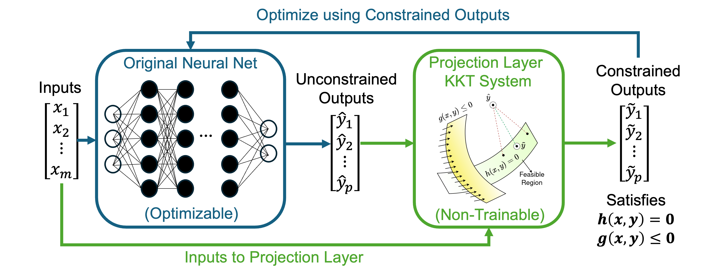
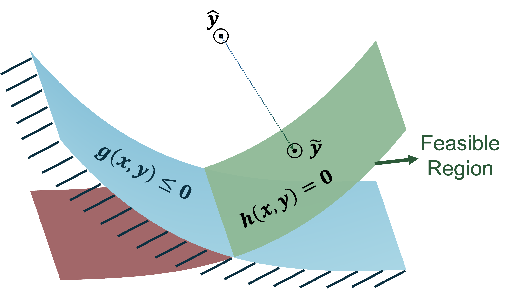

KKT-HardNet
KKT-HardNet is a JAX-based Python package for constrained surrogate modeling, inverse parameter estimation, and unsupervised optimization with a hard KKT projection layer. It learns mappings from problem parameters \(x\) to decision variables \(y\) while enforcing equality and inequality constraints through a differentiable projection layer.
{kind=link}

Figure 1: Overview of the learning-and-projection workflow.
Installation
KKT-HardNet requires Python 3.9 or later and supports CPU-only and CUDA 12 installations.
CPU-only
pip install kkt-hardnet
GPU (NVIDIA, CUDA 12)
pip install "kkt-hardnet[cuda12]"
The PyPI package name is kkt-hardnet. The Python import name is:
from kkthn import KKTHardNet
Quick Overview
KKT-HardNet targets parameterized constrained problems of the form:
The package can be used in three modes:
model()for supervised surrogate learning from known parameter-variable pairs.optimize()for unsupervised optimization when only parameter samples are supplied.estimate()for inverse parameter estimation when unknown symbolic parameters should be learned from data.
The neural network predicts a raw \(\hat y\); the KKT projection layer maps that prediction to a constraint-satisfying variable estimate.
{kind=link}

Figure 2: Projection interpretation during constrained learning.
Core API
KKTHardNet(name=..., train=...)is the user-facing entry point.add_parameter(...)andadd_variable(...)register symbolic problem names.add_inverse_parameter(...)registers unknown scalar parameters for inverse estimation.matrix(...),vector(...),tensor(...), andextract(...)register reusable constants.objectivestores the optimization objective used byoptimize().constraints.add(...)records equality and inequality constraints.dataset(parameters=..., variables=...)attaches CSV data.model(),optimize(), andestimate()train the requested workflow.load(metadata_path)restores a saved run.predict(x_value, projection_backend=...)returns projected variable predictions.
General Workflow
Setup
import os
from pathlib import Path
import time
import numpy as np
import pandas as pd
import sys
from kkthn import KKTHardNet
Configuration
DATA_PATH = "dataset/ED_Col_Data.csv"
WORK_PATH = "dataset/ED_Col_Data_2000.csv"
PARAMETERS = ["x1", "x2", "x3"]
VARIABLES = ["y1", "y2", "y3", "y4", "y5", "y6", "y7", "y8", "y9"]
TRAIN = {
"epochs": 1200,
"batch_size": 40,
"learning_rate": 1e-3,
"train_frac": 0.8,
"hidden_size": 64,
"hidden_layers": 2,
"seed": 42,
"dtype": "float64",
"print_every": 100,
"newton_step_length": 0.5,
"newton_tol": 1e-6,
"newton_reg_factor": 1e-3,
"max_newton_iter": 30,
"max_backtrack_iter": 10,
"eta": 1e-4,
"epoch_mlp": 100,
"cons_alpha": 10,
}
Prepare Data
df = pd.read_csv(DATA_PATH)
required_cols = PARAMETERS + VARIABLES
missing = [c for c in required_cols if c not in df.columns]
if missing:
raise ValueError(f"Missing columns in CSV: {missing}")
df_2000 = (
df[required_cols]
.dropna()
.sample(n=2000, random_state=TRAIN["seed"])
.reset_index(drop=True)
)
os.makedirs("dataset", exist_ok=True)
df_2000.to_csv(WORK_PATH, index=False)
parameters_csv = "dataset/parameters_2000.csv"
variables_csv = "dataset/variables_2000.csv"
df_2000[PARAMETERS].to_csv(parameters_csv, index=False)
df_2000[VARIABLES].to_csv(variables_csv, index=False)
Build Model
model = KKTHardNet(name="ED_Column", train=TRAIN)
x = model.add_parameter(PARAMETERS)
y = model.add_variable(VARIABLES)
model.constraints.add(
x.x1 + x.x2 - y.y1 - y.y2 == 0,
x.x1 * 0.697616946 - y.y1 * y.y3 - y.y2 * y.y6 == 0,
x.x1 * 0.302383054 - y.y1 * y.y4 - y.y2 * y.y7 == 0,
y.y3 + y.y4 + y.y5 - 1 == 0,
y.y6 + y.y7 + y.y8 - 1 == 0,
x.x3 * y.y1 - y.y9 == 0,
)
model.dataset(
parameters=parameters_csv,
variables=variables_csv,
)
Train
result = model.model()
print("Training finished.")
Load and Use a Trained Model
run_dirs = [
d for d in os.listdir(".")
if os.path.isdir(d) and d.startswith("ED_Column_")
]
latest_run_dir = max(run_dirs, key=os.path.getmtime)
metadata_path = os.path.join(latest_run_dir, "metadata.json")
loaded_model = KKTHardNet()
loaded_model.load(metadata_path)
loaded_model.predict([0.363557425, 1.312977767, 2.5])
The projection backend can be:
"auto": use native projection if available, otherwise JAX."jax": force the JAX projection path."native": force the compiled native C projection path.
Example Summary
model.summary()
📊 KKT-HardNet Summary
------------------------------------------------------------
Model Name : ED_Column_test
No. of Parameters : 3
No. of Variables : 9
No. of Equalities : 6
No. of Inequalities : 0
No. of Train Samples : 1600
No. of Validation Samples : 400
Maximum Constraint Violation : 7.4773e-07
Training Time : 197.92 s
Est. JAX Single Inference Time : 0.14 ms
Est. JAX Batch Inference Time : 1.85 ms
------------------------------------------------------------
Note: Inference time estimations are based on
microbenchmarking on the hardware used during
training and may vary across different hardware
and runtime conditions.
model.plot_history(bg="white")

Citation
If you use this package in your work, please cite us using the Citations page.
Reporting a Bug or Error
When reporting an issue, please include a short description, relevant code, error messages or logs, and the steps needed to reproduce the behavior.